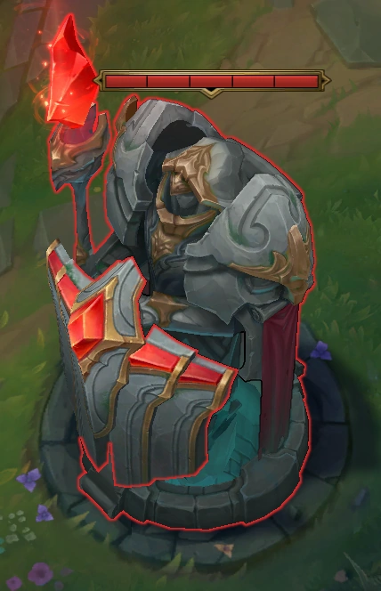
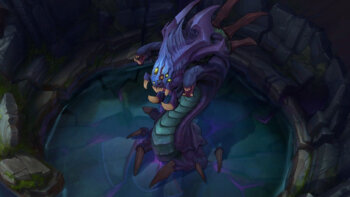
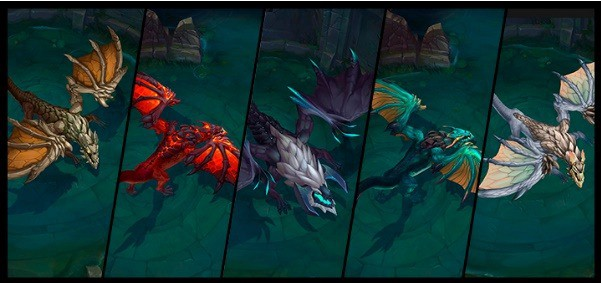
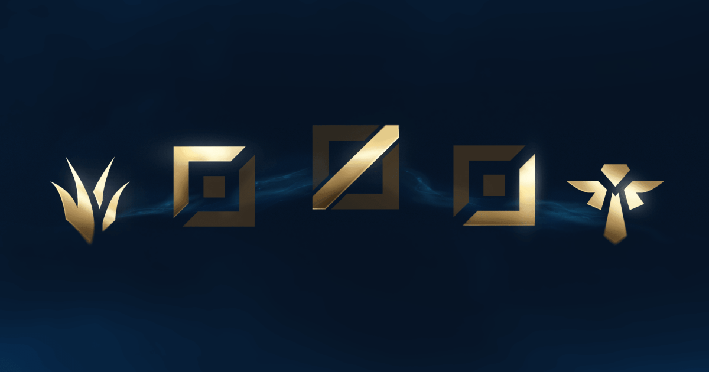
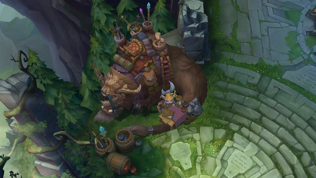
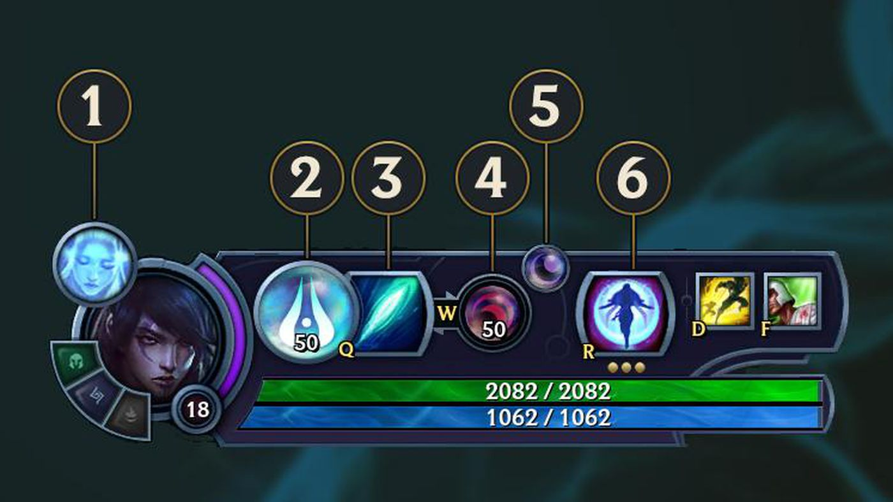

How to play
DESTROY THE BASE
The Nexus is the focal point of the two teams' bases. To win the game, your team must destroy the enemy Nexus.
The Nexus is where the minions appear on the map. Behind the Nexus is the fountain, the place where you can quickly recover your lost life and hand and where you can access the store.
The enemy base nexus is the same as your team base. If your team manages to destroy the enemy Nexus, then the victory is yours.

THE WAY TO VICTORY
To reach the enemy Nexus, your team must destroy all defensive structures on at least one aisle. These are the towers and the inhibitors. There are three towers and an inhibitor on each aisle, and each Nexus is guarded by two towers.
The towers deal real damage against enemy minions and champions and give the Allied team limited vision in the mists of war. To avoid damage, try to attack these structures only when you have minions in front of you.
Each inhibitor is protected by a tower. When an inhibitor is destroyed, super minions will appear in its aisle for a few minutes. After that, the inhibitor regenerates and the super-minions stop appearing.
FACE THE DANGERS OF THE JUNGLE
Between the colors is the jungle, where neutral monsters and plants live. The most important monsters are Baron Nashor and the dragons. If you manage to kill them, your team will receive unique buffs, which can change the course of the game.
Baron Nashor is the most powerful monster in the jungle. If a team manages to kill the Baron, they receive a bonus for attack damage and skill, improved 'Recall', and the power of the minions around its members increases significantly.
Dragons are powerful monsters, which offer unique bonuses depending on the element of the slain dragon. In the game there are five elemental dragons and an ancient Dragon.
 CHOOSE YOUR COLOR
The recommended team composition consists of five positions. Each aisle fits best with certain types of champions and roles - you can try to play all the aisles in a row or focus on the one you like best.
The champions in the top lane are the lone and resilient fighters of your team. Their goal is to protect their lane and focus their attacks on the strongest members of the opposing team.
Junglers live to hunt down their enemies. I walk skillfully and cunningly from one aisle to another and keep an eye on the most important neutral monsters, attacking exactly when my opponents drop their guard.
The champions of the middle lane quickly cause enormous damage, both alone and with the team. For them, the fight is like a dangerous dance, in which they always try to find opportunities to catch their enemies on the wrong foot.
Downhill champions are the explosive force of your team. They are a valuable resource, so they need to be protected at the beginning of the game, until they gather enough gold and enough experience to be able to win the match for your team.
Supporting champions are the team's goalkeepers. They keep their teammates alive and help them kill their opponents; In addition, it protects your colleague down the aisle until he or she becomes stronger.
INCREASE THE POWER OF YOUR CHAMPION
Champions become stronger as they gain experience to move to the next level, as well as gold to buy stronger items. These two factors are crucial to dominating the enemy team and destroying its base.
When champions gain a certain amount of experience, they automatically move to the next level and can unlock or improve certain skills; in addition, their basic attributes become stronger. You can gain experience by killing enemy units and champions, participating in an assassination, and destroying your opponent's defensive structures.
Gold is the currency in the game where you can buy items for your champion. You can collect gold by killing enemy units and champions, by participating in an assassination, by destroying your opponent's defensive structures, and by equipping items that offer gold.
With the help of the store, you can buy items with the gold you earn or sell them. The store can only be accessed from the fountain.
UNLOCK YOUR SKILLS
Champions have five main abilities, two special spells, and can keep up to seven items in inventory at the same time. In order for your team to win, you need to find out the optimal order for skills, what summoning spells to use, and what items to buy.
Most champions have a unique set of five abilities: one passive, three basic, and one supreme. These skills can be used with the Q, W, E and R keys.
